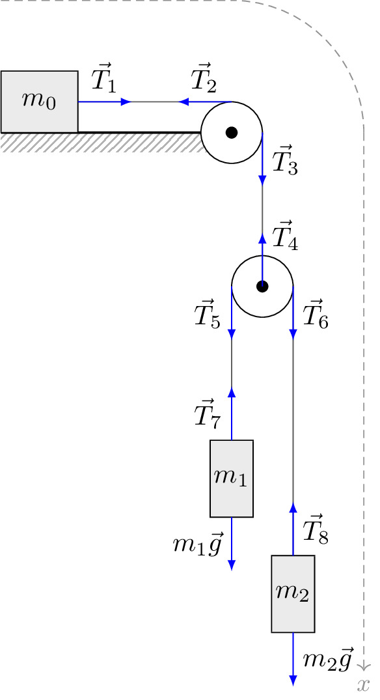

pre.tex
\documentclass[tikz]{standalone}\input{pre.tex}\begin{document}\begin{tikzpicture}
\def\rr{0.4}
\def\D{4.3}
\draw[interface] (0,0) rectangle (3,0);
\draw[interface] (0,-0.25) rectangle (3,0);
\draw[thick] (0,0) -- (3,0);
\draw[axis] (0,\D*\rr) --(3,\D*\rr);
\draw[axis] (3,\D*\rr) ++ (\D*\rr,-\D*\rr) arc (0:90:\D*\rr);
\draw[axis, ->] ($(3,0)+(\D*\rr,0)$) -- ++(0,-7) node[below] {$x$};
%Верхний блок (с)
\draw[fill=white] (3,0) coordinate (0) circle (\rr);
\path (0) -- +(0,\rr) coordinate (Cl) + (\rr,0) coordinate (Cr);
\draw[fill=black] (0) circle (2pt);
\draw[black!70] (Cr) -- ++ (0,-2) coordinate (B);
\draw[black!70] (Cl) -- ++ (-2,0) coordinate (m0);
%Груз m_0
\draw[fill=black!10] ($(m0)+(0,\rr)$) rectangle node[] {$m_0$} ($(m0)-(1,\rr)$) ;
\draw (B) circle (\rr);
\path (B) -- +(-\rr,0) coordinate (Bl) + (\rr,0) coordinate (Br);
\draw[fill=black] (B) circle (2pt);
\draw[black!70] (Br) -- ++ (0,-3.5) coordinate (m2);
\draw[black!70] (Bl) -- ++ (0,-2) coordinate (m1);
\draw[fill=black!10] ($(m1)+(0.7*\rr,0)$) rectangle node[] {$m_1$} ($(m1)-(0.7*\rr,1)$) ;
\draw[fill=black!10] ($(m2)+(0.7*\rr,0)$) rectangle node[] {$m_2$} ($(m2)-(0.7*\rr,1)$) ;
\coordinate (m1b) at ($(m1)-(0,1)$);
\coordinate (m2b) at ($(m2)-(0,1)$);
\draw[force,->] (m0)-- node[above] {$\vec{T}_1$} ++(0.7,0);
\draw[force,->] (Cl)-- node[above] {$\vec{T}_2$} ++(-0.7,0);
\draw[force,->] (Cr)-- node[right] {$\vec{T}_3$} ++(0,-0.7);
\draw[force,->] (B)-- node[right, anchor=south west] {$\vec{T}_4$} ++(0,0.7);
\draw[force,->] (Bl)-- node[left] {$\vec{T}_5$} ++(0,-0.7);
\draw[force,->] (Br)-- node[right] {$\vec{T}_6$} ++(0,-0.7);
\draw[force,->] (m1)-- node[left] {$\vec{T}_7$} ++(0,0.7);
\draw[force,->] (m2)-- node[right] {$\vec{T}_8$} ++(0,0.7);
\draw[force,->] (m1b)-- node[left] {$m_1\vec{g}$} ++(0,-0.7);
\draw[force,->] (m2b)-- node[right] {$m_2\vec{g}$} ++(0,-0.7);
\end{tikzpicture}\end{document}